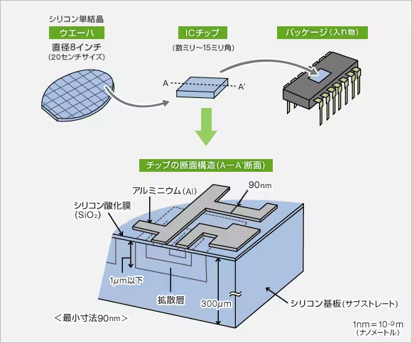
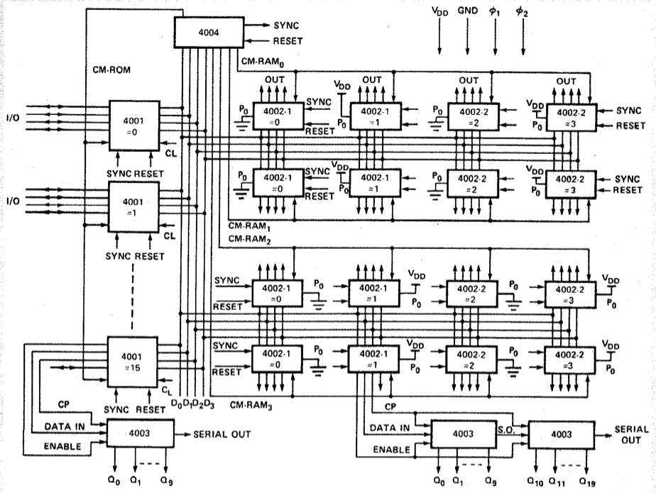

半導体入門
現代社会の「魔素」が見えるように
井形研 RA 半導体読書会
駒場IIキャンパス４号館
1 イントロ
半導体とは？なぜ重要なのか？
A Blog Entry on Bayesian Computation by an Applied Mathematician
$$
$$
1.1 半導体
- 21世紀に入った時点で，大きく分けて 18 の半導体デバイスが存在する (Ng, 2002)．
- 細かいものを含めると 140．
- 全てトランジスタの組み合わせからなる．
1.2 半導体産業
世界の半導体出荷額は直近 10 年で２倍になっている
1.3 半導体とは？
1.4 半導体の物理
このような半導体では，熱や光，また外部電磁場などにより価電子が励起され，伝導帯に移る．この電子に加えて，価電子帯に生じた正孔も導電性に寄与する．2 この 正孔 (hole) を擬似的に粒子と扱い，正孔の波動方程式を議論したのが (Heisenberg, 1931) である．
1.5 半導体発見の歴史
(Faraday, 1833) は，通常金属では温度の上昇と共に電気抵抗が増すが，硫化銀 Ag2S を初めとしたいくつかの物質では逆に電気抵抗が減少することを報告している．
(Braun, 1874) は 方鉛鉱 PbS に電流を流そうとしても，単一方向にしか電流が流れない整流作用を示すことを発見し，3 その後20世紀に入るとラジオに応用された．これが人類が初めて出会った半導体デバイスだったと言える (Sze and Lee, 2012, p. 1)．4
Braun はその後ブラウン管を発明し，こちらの業績により 1909 年にノーベル物理学賞を受賞する．
1.6 基本用語のまとめ
半導体素子には，トランジスタやダイオードなどがある．これらを配線によって相互接続したものが IC チップである．IC チップはシリコンのインゴットを円板状に切り出した ウエハ (wafer) 上に構築する．IC チップは平面的な印象を受けるが，実際は層に分けて構成されている，高度に立体的な構造物である．

一つのウエハから多数のチップが作成され，その各単位を ダイ (die) ともいう．
しかし，普段我々が目にする IC チップ は パッケージ されたもの，で．IC チップそのもの（ダイそのもの）を目にすることはない．
32nm などというときは，ダイの大きさではなく，ダイ上の最小のトランジスタのサイズをいう．5
2 集積回路が出来るまで
2.1 設計
まず回路を設計し，原版（マスター）を作る．これを フォトマスク (photomask) または レティクル (reticle) という．
2.2 フォトリソグラフィ
これをウエハに転写するには，フォトリソグラフィ (Photolithography) を用いる．シリコンウエハの形成は，Czochralski 法 (Czochralski, 1918) による．6
2.3 フォトリソグラフィの歴史
リソグラフィ自体は 1798 年からあり，Niépce が 歴青 が感光剤の役割を果たすことを発見し，カメラの発明と同時に発見された．

2.4 フォトリトグラフィの産業応用
エッチングに耐性のある感光剤を使えば，半導体デバイスの製造に応用できると気づいたのは (Andrus, 1957) である．この技術は半導体製造コストの 35 %を占めており，半導体市場の急成長はほとんどこの技術の進歩と両輪であると言う者も多い．7
シリコン表面に酸化被膜を形成することで不純物原子の移動を阻止できることは (Frosch and Derick, 1957) が発見した．
2.5 最初の IC
以上の技術を用いて，最初の IC は Texas Instruments の Jack Kilby によって作られた．

Jack Kilby はその後 2000 年にノーベル物理学賞を受賞する．
2.6 最初の IC
- 双極トランジスタ が１つ
- 抵抗器３つ
- コンデンサ１つ
- 全てゲルマニウムからなる．
- 回路は導線
2.7 次の IC
Fairchild Semiconductor の Robert Noyce によって作られた．
Robert Noyce はその後 Gordon Moore と Intel も創業し，the Mayor of Silicon Valley と呼ばれる．
2.8 次の IC
リトグラフによりアルミニウムの配線を形成
Planar Process (Hoerni, 1960) （現在主流の製法）で製造
１つのシリコン基盤上に作った
→ monolithic で大量生産が可能
1961 年から 1965 年は，NASA の Appolo 計画からの特需もあり，半導体産業は大きく成長した．
3 製造
技術は揃った．実際に，どのように半導体チップを製造するか？
3.1 設計 (design)

4 半導体製造装置

参考文献
Footnotes
(Böer and Pohl, 2018, p. 4), (Huebener, 2019, p. 73) Chapter 6．金属が電気を通すのは，伝導帯が部分的に電子によって占められているためである．半導体は，（例えば温度を上げることなどにより）価電子帯の電子を簡単に伝導帯に移すことができるため，思い通りに金属のような振る舞いも，絶縁体のような振る舞いも引き出すことができる．しかし，半導体の自由電子は，金属に比べて極めて少なく．Boltzmann 統計に従い，金属の自由電子は Fermi 統計に従う (Madelung, 1978, p. 17)．一方で，金属の導電性は電子の密度とは関係がなく，金属内の電子密度は温度により一定である (Madelung, 1978, p. 211)．↩︎
(Huebener, 2019, p. 73) 特に伝導体と半導体の境界部分で強く見られた．↩︎
現代では，このような接合を金属-半導体接合 (metal-semiconductor contact) または Schottky 接合 といい，Ohmic 接合と対比する．↩︎
一方で GaAs の形成は Bridgman 法 (Bridgman, 1925) による．最も，この化合物が半導体であると発見されたのは (Welker, 1952) になってようやくのことである．(Sze and Lee, 2012, p. 6) も参照．↩︎